🎯 Цели занятия
- Создать испытания для паркура (obby)
- Ориентироваться в интерфейсе Roblox Studio
- Управлять камерой и трансформировать объекты
- Дублировать и вращать объекты
| Этап занятия | Время | Что делаем |
|---|---|---|
| Введение, знакомство с картой | 10 мин | Скачиваем карту, осматриваем обломки |
| Повторение инструментов | 10 мин | |
| Задание 1 — Цветная дорожка | 15 мин | |
| Задание 2 — Блоки с поворотом | 10 мин | |
| Задание 3 — Сферы | 15 мин | |
| Задание 4 — Восстанови лестницу | 15 мин | |
| Задание 5 — Твои два испытания | 10 мин | |
| Опрос и итоги | 5 мин | Проверяем себя |
🗺️ Скачай карту с обломками и открой её в Roblox Studio. Попроси тренера помочь!
1 Инструменты — наши руки
Чтобы восстановить паркур, нужно уверенно владеть четырьмя главными инструментами. Вспомним их:
| Инструмент | Горячая клавиша | Что делает |
|---|---|---|
|
Select (Выбор)
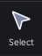 |
Q | Выделяет объект |
|
Move (Перемещение)
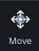 |
W | Двигает по осям X, Y, Z |
|
Scale (Масштаб)
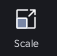 |
E | Меняет размер |
|
Rotate (Вращение)
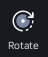 |
R | Вращает вокруг оси |
Как открыть свойства объекта в Roblox Studio
- Выдели объект – кликни по нему в окне Workspace (3D-вид) или в Explorer (справа).
- Открой панель Properties – если её нет, включи через меню View → Properties (или нажми Ctrl+1).
- В панели Properties ты увидишь все параметры объекта:
Size,Anchored,BrickColor,Materialи другие.
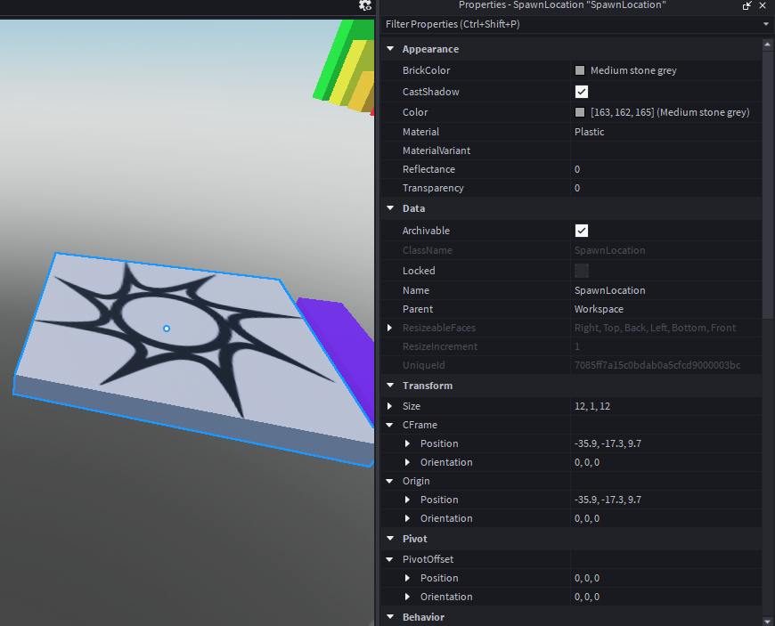
Свойства объектов в паркуре
| Свойство | Зачем в паркуре |
|---|---|
Anchored | Фиксирует объект — чтобы мины не падали |
Size | Размер платформы, лужи, препятствия |
Material | Визуальный вид (Neon для яркости) |
BrickColor | Цвет (например, красный для мин) |
CanCollide | Можно ли проходить сквозь |
Нажми на вопрос — Алиса ответит тебе прямо сейчас!
Просто скажи: «Алиса, как включить Anchored в Roblox Studio?»
🔧 Какой инструмент?
Выбери правильный инструмент для действия:
Инструмент, который меняет размер объекта.
2 Задания по восстановлению
🧨 Задание 1 — Цветная дорожка
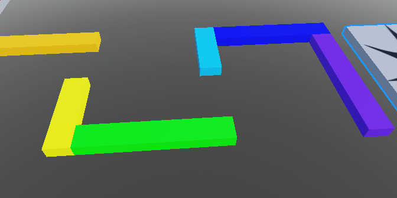
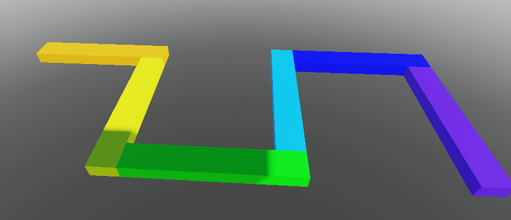
🔄 Задание 2 — Блоки с поворотом
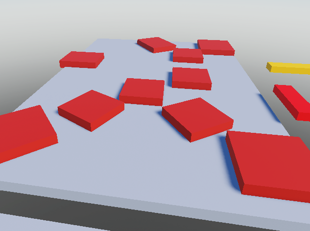
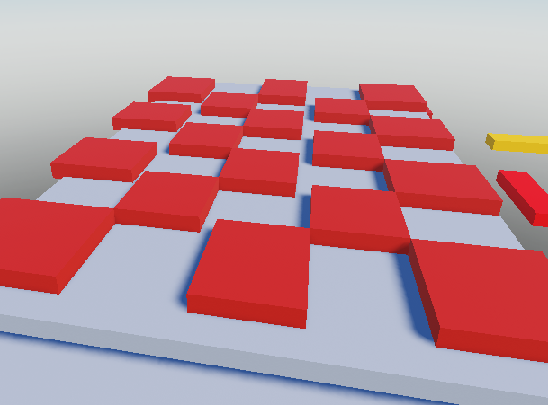
📐 Задание 3 — Сферы
-
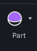
-
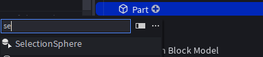
-
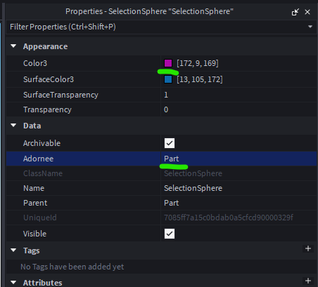
-
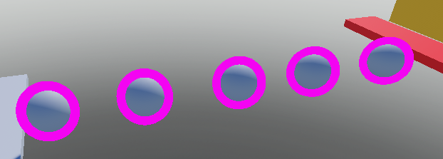
🧩 Задание 4 — Восстанови лестницу
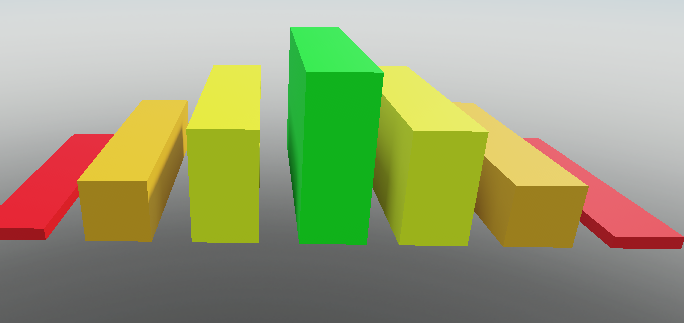
✨ Задание 5 — Твои два испытания
Чтобы добавить готовые модели в свою игру, открой панель Toolbox через меню View → Toolbox (или нажми Ctrl+Alt+T).
В поиске введи ключевое слово (например, «chair», «tree», «spike») и перетащи понравившуюся модель прямо в Workspace.
Помни: все модели можно перемещать, вращать и масштабировать инструментами Move (W), Rotate (R) и Scale (E).
Как выглядит панель Toolbox
Найди её в верхнем меню View → Toolbox
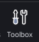
. В открывшемся окне введи запрос и перетащи модель в сцену.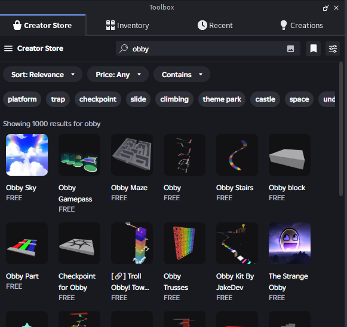
💭 Ты доволен своей работой?
Оцени свои ощущения:
🧩 Вопросы на закрепление
Какой инструмент изменяет размер?
Какой инструмент выделяет объекты?
📝 Проверь себя, паркурщик!
1. Какая клавиша дублирует объект?
2. Какой инструмент используется для вращения?
3. Чтобы объект не падал, нужно включить свойство...
4. Что делает инструмент Scale (E)?
5. Для чего используют Toolbox?
6. Где находится список всех объектов в игре?